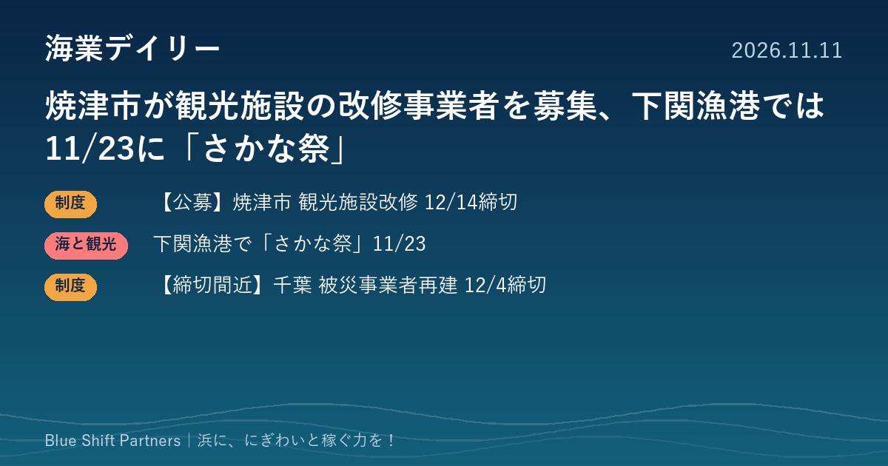

2026.11.11
焼津市が観光施設の改修事業者を募集、下関漁港では11/23に「さかな祭」

静岡県焼津市が、県の新しい補助制度を使った観光施設の改修に向けて、事業者の募集を始めました。山口県の下関漁港では11月23日に「下関さかな祭」が開かれます。千葉県の豪雨被災事業者向け補助金は、1回目の締切が12月4日に迫っています。
【公募】焼津市、観光地域の高付加価値化に向けて施設を改修する事業者を募集（12/14締切）
焼津市は、静岡県の観光地域高付加価値化整備事業費補助金の交付要綱に基づき、2027年度に「焼津市周遊型高付加価値観光促進計画」を策定する予定で、2027〜2029年度に施設の整備・改修を行う事業者を募集しています。対象は旅館業法の許可を持つ宿泊施設のほか、飲食店、土産物屋、水族館、道の駅などの観光施設で、インバウンド向けの改修や遊休建物のリノベーションなどが対象です。補助率は県が3分の1以内、市町が6分の1（市町の制度による）とされ、県の補助額は1施設あたり下限200万円で、上限は区分により600万円または3,300万円と示されています。提出期限は2026年12月14日（月）午後5時、提出先は焼津市商工観光課 観光交流担当です。
ここがポイント：複数の事業者が地域単位で5事業以上の計画をつくり、県の審査会で採択された場合に対象となる仕組みで、市は現時点で採択や補助額を約束するものではないとしています。焼津の浜で食堂・土産物店・直売の店舗を改修したい事業者にとっては、計画に名乗りを上げておく機会になります。
出典：焼津市「観光地域高付加価値化整備事業費補助金」（2026-11-09）
山口・下関漁港で11月23日に「第44回下関さかな祭」
第44回下関さかな祭が、2026年11月23日（月・祝）の午前7時30分から11時まで、下関漁港（下関市大和町）で開かれます。主催は下関さかな祭実行委員会・下関商工会議所で、山口県や下関市、下関水産振興協会などが共催します。活魚・鮮魚や水産加工品の販売、ふく鍋・あんこう鍋などの提供、タッチングプールなどが予定されています。会場と駐車場は11時30分に閉まり、主催者は公共交通機関の利用を勧めています。
ここがポイント：市場のある漁港を朝の数時間だけ開放し、鍋や販売で人を呼ぶ形は、漁港を使ったにぎわいづくりの分かりやすい例です。行政・商工団体・水産団体が組む運営体制も、自分たちの浜で催しを企画するときの参考になります。
出典：下関商工会議所「下関さかな祭」（2026-11-11）
【締切間近】千葉県被災小規模事業者再建支援事業補助金、1回目は12/4まで
千葉県は、令和8年8月千葉豪雨で被災した県内の小規模事業者を対象に、施設の修繕費、機械装置費、設備の廃棄費を補助しています。補助率は3分の2以内、上限100万円・下限10万円です。申請受付は11月6日に始まっており、1回目の締切は12月4日（金）17時、2回目は令和9年1月中旬の予定です。申請は電子申請または郵送で、問い合わせ先は県商工労働部経済政策課 中小企業・団体支援室です。
ここがポイント：8月の豪雨で被害を受けた県内の小規模事業者であれば、浜の直売所や食堂、加工場の設備の修繕・入れ替えに使える可能性があります。1回目の締切まで残り23日です。
出典：千葉県「千葉県被災小規模事業者再建支援事業補助金」（2026-10-30）
下関の「さかな祭」のように、漁港を朝だけ開けて鍋や販売で人を呼ぶ催しは、市場と浜の顔を同時に見せられる場です。焼津市の募集のように、観光の補助は市の計画に名前が載っているかどうかで使えるかが決まることがあります。浜の店の改修を考えている方は、自治体の計画づくりの段階から声を上げておくのが近道です。